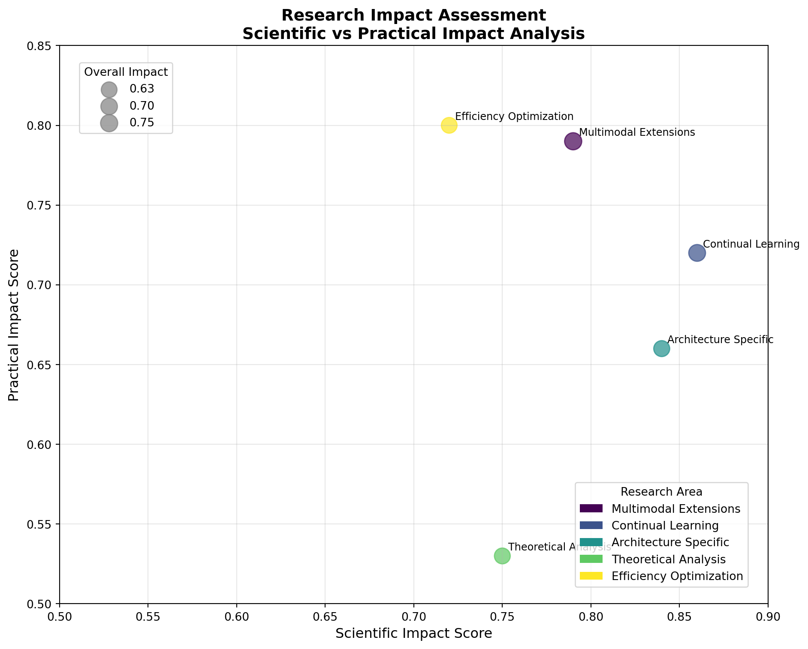

LoRA for Vision-Language Models: A Comprehensive Guide

Abstract
Low-Rank Adaptation (LoRA) has emerged as a revolutionary technique for efficient fine-tuning of large language models, and its application to Vision-Language Models (VLMs) represents a significant advancement in multimodal AI. This comprehensive guide provides theoretical foundations, practical implementation strategies, and production deployment techniques for LoRA in VLMs, covering everything from basic concepts to advanced optimization methods.
Introduction
Vision-Language Models like CLIP, BLIP, LLaVA, and GPT-4V contain billions of parameters, making full fine-tuning computationally expensive and memory-intensive. LoRA addresses these challenges by:
- Reducing memory requirements by up to 90%
- Accelerating training by 2-3x
- Maintaining model performance with minimal parameter overhead
- Enabling modular adaptation for different tasks and domains
Why LoRA for VLMs?
Understanding LoRA
Core Principles
LoRA is based on the hypothesis that weight updates during fine-tuning have a low intrinsic rank. Instead of updating all parameters, LoRA decomposes the weight update matrix into two smaller matrices:
\[\Delta W = BA\]
Where:
- \(W\) is the original weight matrix (\(d \times d\))
- \(B\) is a learnable matrix (\(d \times r\))
- \(A\) is a learnable matrix (\(r \times d\))
- \(r\) is the rank (\(r \ll d\))
Mathematical Foundation
For a linear layer with weight matrix \(W_0\), the forward pass becomes:
\[h = W_0x + \Delta Wx = W_0x + BAx\]
The adapted weight matrix is: \[W = W_0 + \alpha BA\]
Where \(\alpha\) is a scaling factor that controls the magnitude of the adaptation.
Code
import torch
import torch.nn as nn
import torch.nn.functional as F
import math
class LoRALayer(nn.Module):
def __init__(self, in_features, out_features, rank=16, alpha=16, dropout=0.1):
super().__init__()
self.rank = rank
self.alpha = alpha
self.scaling = alpha / rank
# LoRA matrices
self.lora_A = nn.Linear(in_features, rank, bias=False)
self.lora_B = nn.Linear(rank, out_features, bias=False)
self.dropout = nn.Dropout(dropout)
# Initialize weights
nn.init.kaiming_uniform_(self.lora_A.weight, a=math.sqrt(5))
nn.init.zeros_(self.lora_B.weight)
def forward(self, x):
result = self.lora_A(x)
result = self.dropout(result)
result = self.lora_B(result)
return result * self.scaling
class LoRALinear(nn.Module):
def __init__(self, original_layer, rank=16, alpha=16, dropout=0.1):
super().__init__()
self.original_layer = original_layer
self.lora = LoRALayer(
original_layer.in_features,
original_layer.out_features,
rank, alpha, dropout
)
# Freeze original weights
for param in self.original_layer.parameters():
param.requires_grad = False
def forward(self, x):
return self.original_layer(x) + self.lora(x)
# Example usage
original_linear = nn.Linear(768, 768)
lora_linear = LoRALinear(original_linear, rank=16, alpha=16)
print(f"Original parameters: {sum(p.numel() for p in original_linear.parameters())}")
print(f"LoRA parameters: {sum(p.numel() for p in lora_linear.lora.parameters())}")
print(f"Parameter reduction: {(1 - sum(p.numel() for p in lora_linear.lora.parameters()) / sum(p.numel() for p in original_linear.parameters())) * 100:.1f}%")Original parameters: 590592
LoRA parameters: 24576
Parameter reduction: 95.8%Key Advantages
- Parameter Efficiency: Only trains ~0.1-1% of original parameters
- Memory Efficiency: Reduced GPU memory requirements
- Modularity: Multiple LoRA adapters can be stored and swapped
- Preservation: Original model weights remain unchanged
- Composability: Multiple LoRAs can be combined
Vision-Language Models Overview
Architecture Components
Modern VLMs typically consist of:
- Vision Encoder: Processes visual inputs (e.g., Vision Transformer, ResNet)
- Text Encoder: Processes textual inputs (e.g., BERT, GPT)
- Multimodal Fusion: Combines visual and textual representations
- Output Head: Task-specific prediction layers
flowchart TD
A[Image Input] --> B[Vision<br/>Encoder]
C[Text Input] --> D[Text<br/>Encoder]
B --> E[Multimodal<br/>Fusion]
D --> E
E --> F[Output<br/>Head]
F --> G[Predictions]
classDef input fill:#add8e6,stroke:#000,stroke-width:2px
classDef encoder fill:#90ee90,stroke:#000,stroke-width:2px
classDef fusion fill:#ffffe0,stroke:#000,stroke-width:2px
classDef output fill:#f08080,stroke:#000,stroke-width:2px
classDef prediction fill:#d3d3d3,stroke:#000,stroke-width:2px
class A,C input
class B,D encoder
class E fusion
class F output
class G prediction
Popular VLM Architectures
CLIP (Contrastive Language-Image Pre-training)
- Dual-encoder architecture
- Contrastive learning objective
- Strong zero-shot capabilities
BLIP (Bootstrapping Language-Image Pre-training)
- Encoder-decoder architecture
- Unified vision-language understanding and generation
- Bootstrap learning from noisy web data
LLaVA (Large Language and Vision Assistant)
- Combines vision encoder with large language model
- Instruction tuning for conversational abilities
- Strong multimodal reasoning
LoRA Architecture for VLMs
Component-wise Application
LoRA can be applied to different components of VLMs:
Code
class VLMLoRAAdapter:
def __init__(self, model, config):
self.model = model
self.config = config
self.lora_layers = {}
def add_lora_to_attention(self, module_name, attention_layer):
"""Add LoRA to attention mechanism"""
# Query, Key, Value projections
if hasattr(attention_layer, 'q_proj'):
attention_layer.q_proj = LoRALinear(
attention_layer.q_proj,
rank=self.config.rank,
alpha=self.config.alpha
)
if hasattr(attention_layer, 'k_proj'):
attention_layer.k_proj = LoRALinear(
attention_layer.k_proj,
rank=self.config.rank,
alpha=self.config.alpha
)
if hasattr(attention_layer, 'v_proj'):
attention_layer.v_proj = LoRALinear(
attention_layer.v_proj,
rank=self.config.rank,
alpha=self.config.alpha
)
def add_lora_to_mlp(self, module_name, mlp_layer):
"""Add LoRA to feed-forward layers"""
if hasattr(mlp_layer, 'fc1'):
mlp_layer.fc1 = LoRALinear(
mlp_layer.fc1,
rank=self.config.rank,
alpha=self.config.alpha
)
if hasattr(mlp_layer, 'fc2'):
mlp_layer.fc2 = LoRALinear(
mlp_layer.fc2,
rank=self.config.rank,
alpha=self.config.alpha
)Layer Selection Strategy
Not all layers benefit equally from LoRA adaptation:
| Priority | Layer Type | Reason |
|---|---|---|
| High | Final attention layers | Most task-specific representations |
| High | Cross-modal attention | Critical for multimodal fusion |
| High | Task-specific output heads | Direct impact on outputs |
| Medium | Middle transformer layers | Balanced feature extraction |
| Medium | Feed-forward networks | Non-linear transformations |
| Low | Early encoder layers | Generic low-level features |
| Low | Embedding layers | Fixed vocabulary representations |
Rank Selection Guidelines
The rank \(r\) significantly impacts performance and efficiency:
Rank Selection Guidelines:
- r = 1-4: Minimal parameters, suitable for simple adaptations
- r = 8-16: Balanced efficiency and performance for most tasks
- r = 32-64: Higher capacity for complex domain adaptations
- r = 128+: Approaching full fine-tuning, rarely needed
Configuration Management
Code
from dataclasses import dataclass
from typing import List, Optional
@dataclass
class LoRAConfig:
# Basic LoRA parameters
rank: int = 16
alpha: int = 16
dropout: float = 0.1
# Target modules
target_modules: List[str] = None
vision_target_modules: List[str] = None
text_target_modules: List[str] = None
# Training parameters
learning_rate: float = 1e-4
weight_decay: float = 0.01
warmup_steps: int = 500
# Advanced options
use_gradient_checkpointing: bool = True
mixed_precision: bool = True
task_type: str = "multimodal_classification"
def __post_init__(self):
if self.target_modules is None:
self.target_modules = [
"q_proj", "k_proj", "v_proj", "o_proj",
"gate_proj", "up_proj", "down_proj"
]
if self.vision_target_modules is None:
self.vision_target_modules = [
"qkv", "proj", "fc1", "fc2"
]
if self.text_target_modules is None:
self.text_target_modules = [
"q_proj", "k_proj", "v_proj", "dense"
]
# Example configurations for different tasks
task_configs = {
"image_captioning": LoRAConfig(
rank=32,
alpha=32,
target_modules=["q_proj", "v_proj", "dense"],
task_type="image_captioning"
),
"visual_question_answering": LoRAConfig(
rank=16,
alpha=16,
target_modules=["q_proj", "k_proj", "v_proj"],
task_type="visual_question_answering"
),
"image_classification": LoRAConfig(
rank=8,
alpha=16,
target_modules=["qkv", "proj"],
task_type="image_classification"
)
}
print("Available task configurations:")
for task, config in task_configs.items():
print(f"- {task}: rank={config.rank}, alpha={config.alpha}")Available task configurations:
- image_captioning: rank=32, alpha=32
- visual_question_answering: rank=16, alpha=16
- image_classification: rank=8, alpha=16Training Strategies
1. Progressive Training
Start with lower ranks and gradually increase:
Code
class ProgressiveLoRATrainer:
def __init__(self, model, initial_rank=4, max_rank=32):
self.model = model
self.current_rank = initial_rank
self.max_rank = max_rank
def expand_rank(self, new_rank):
"""Expand LoRA rank while preserving learned weights"""
for name, module in self.model.named_modules():
if isinstance(module, LoRALinear):
old_lora = module.lora
# Create new LoRA layer
new_lora = LoRALayer(
old_lora.lora_A.in_features,
old_lora.lora_B.out_features,
rank=new_rank
)
# Copy existing weights
with torch.no_grad():
new_lora.lora_A.weight[:old_lora.rank] = old_lora.lora_A.weight
new_lora.lora_B.weight[:, :old_lora.rank] = old_lora.lora_B.weight
module.lora = new_lora
def progressive_training_schedule(self, num_epochs):
"""Generate progressive training schedule"""
schedule = []
epochs_per_stage = num_epochs // 3
# Stage 1: Small rank
schedule.append({
'epochs': epochs_per_stage,
'rank': 4,
'lr': 1e-3,
'description': 'Initial adaptation with small rank'
})
# Stage 2: Medium rank
schedule.append({
'epochs': epochs_per_stage,
'rank': 16,
'lr': 5e-4,
'description': 'Expand capacity with medium rank'
})
# Stage 3: Full rank
schedule.append({
'epochs': num_epochs - 2 * epochs_per_stage,
'rank': 32,
'lr': 1e-4,
'description': 'Fine-tune with full rank'
})
return schedule
# Example usage
trainer = ProgressiveLoRATrainer(None) # Would pass actual model
schedule = trainer.progressive_training_schedule(12)
print("Progressive Training Schedule:")
for i, stage in enumerate(schedule, 1):
print(f"Stage {i}: {stage['description']}")
print(f" - Epochs: {stage['epochs']}")
print(f" - Rank: {stage['rank']}")
print(f" - Learning Rate: {stage['lr']}")
print()Progressive Training Schedule:
Stage 1: Initial adaptation with small rank
- Epochs: 4
- Rank: 4
- Learning Rate: 0.001
Stage 2: Expand capacity with medium rank
- Epochs: 4
- Rank: 16
- Learning Rate: 0.0005
Stage 3: Fine-tune with full rank
- Epochs: 4
- Rank: 32
- Learning Rate: 0.0001
2. Multi-Stage Training
Code
def multi_stage_training(model, train_loader, config):
"""
Multi-stage training strategy:
1. Stage 1: Freeze vision encoder, train text components
2. Stage 2: Freeze text encoder, train vision components
3. Stage 3: Joint training with reduced learning rate
"""
print("Multi-Stage Training Strategy")
print("=" * 40)
# Stage 1: Text-only training
print("Stage 1: Text-only training")
print("- Freezing vision encoder")
print("- Training text LoRA components")
for name, param in model.named_parameters():
if 'vision' in name:
param.requires_grad = False
elif 'lora' in name and 'text' in name:
param.requires_grad = True
trainable_params_stage1 = sum(p.numel() for p in model.parameters() if p.requires_grad)
print(f"- Trainable parameters: {trainable_params_stage1:,}")
# train_stage(model, train_loader, epochs=config.stage1_epochs)
# Stage 2: Vision-only training
print("\nStage 2: Vision-only training")
print("- Freezing text encoder")
print("- Training vision LoRA components")
for name, param in model.named_parameters():
if 'text' in name:
param.requires_grad = False
elif 'lora' in name and 'vision' in name:
param.requires_grad = True
trainable_params_stage2 = sum(p.numel() for p in model.parameters() if p.requires_grad)
print(f"- Trainable parameters: {trainable_params_stage2:,}")
# train_stage(model, train_loader, epochs=config.stage2_epochs)
# Stage 3: Joint training
print("\nStage 3: Joint training")
print("- Training all LoRA components")
print("- Reduced learning rate for stability")
for name, param in model.named_parameters():
if 'lora' in name:
param.requires_grad = True
trainable_params_stage3 = sum(p.numel() for p in model.parameters() if p.requires_grad)
print(f"- Trainable parameters: {trainable_params_stage3:,}")
# train_stage(model, train_loader, epochs=config.stage3_epochs, lr=config.lr * 0.1)
# Example configuration
class MultiStageConfig:
def __init__(self):
self.stage1_epochs = 3
self.stage2_epochs = 3
self.stage3_epochs = 4
self.lr = 1e-4
config = MultiStageConfig()
# multi_stage_training(None, None, config) # Would pass actual model and dataAdvanced Techniques
1. AdaLoRA (Adaptive LoRA)
Dynamically adjusts rank based on importance:
Code
class AdaLoRALayer(nn.Module):
def __init__(self, in_features, out_features, max_rank=64, init_rank=16):
super().__init__()
self.max_rank = max_rank
self.current_rank = init_rank
# Full-rank matrices for potential expansion
self.lora_A = nn.Parameter(torch.zeros(max_rank, in_features))
self.lora_B = nn.Parameter(torch.zeros(out_features, max_rank))
# Importance scores
self.importance_scores = nn.Parameter(torch.ones(max_rank))
# Initialize only active components
self.reset_parameters()
def reset_parameters(self):
"""Initialize parameters"""
nn.init.kaiming_uniform_(self.lora_A[:self.current_rank], a=math.sqrt(5))
nn.init.zeros_(self.lora_B[:, :self.current_rank])
def forward(self, x):
# Apply importance-weighted LoRA
active_A = self.lora_A[:self.current_rank] * self.importance_scores[:self.current_rank, None]
active_B = self.lora_B[:, :self.current_rank] * self.importance_scores[None, :self.current_rank]
return x @ active_A.T @ active_B.T
def update_rank(self, budget_ratio=0.7):
"""Update rank based on importance scores"""
scores = self.importance_scores.abs()
threshold = torch.quantile(scores, 1 - budget_ratio)
new_rank = (scores >= threshold).sum().item()
if new_rank != self.current_rank:
print(f"Rank updated: {self.current_rank} -> {new_rank}")
self.current_rank = new_rank
return new_rank
# Demonstration of AdaLoRA rank adaptation
adalora_layer = AdaLoRALayer(768, 768, max_rank=64, init_rank=16)
print("AdaLoRA Rank Adaptation Demo:")
print(f"Initial rank: {adalora_layer.current_rank}")
# Simulate importance score changes
adalora_layer.importance_scores.data = torch.rand(64) # Random importance scores
# Update rank based on importance
new_rank = adalora_layer.update_rank(budget_ratio=0.5)
print(f"New rank after adaptation: {new_rank}")AdaLoRA Rank Adaptation Demo:
Initial rank: 16
Rank updated: 16 -> 32
New rank after adaptation: 322. DoRA (Weight-Decomposed LoRA)
Separates magnitude and direction updates:
Code
class DoRALayer(nn.Module):
def __init__(self, in_features, out_features, rank=16):
super().__init__()
self.rank = rank
# Standard LoRA components
self.lora_A = nn.Linear(in_features, rank, bias=False)
self.lora_B = nn.Linear(rank, out_features, bias=False)
# Magnitude component
self.magnitude = nn.Parameter(torch.ones(out_features))
# Initialize LoRA weights
nn.init.kaiming_uniform_(self.lora_A.weight, a=math.sqrt(5))
nn.init.zeros_(self.lora_B.weight)
def forward(self, x, original_weight):
# LoRA adaptation
lora_result = self.lora_B(self.lora_A(x))
# Direction component (normalized)
adapted_weight = original_weight + lora_result
direction = F.normalize(adapted_weight, dim=1)
# Apply magnitude scaling
return direction * self.magnitude.unsqueeze(0)
# Example: Compare LoRA vs DoRA
original_weight = torch.randn(32, 768)
x = torch.randn(32, 768)
# Standard LoRA
lora_layer = LoRALayer(768, 768, rank=16)
lora_output = lora_layer(x)
# DoRA
dora_layer = DoRALayer(768, 768, rank=16)
dora_output = dora_layer(x, original_weight)
print("LoRA vs DoRA Comparison:")
print(f"LoRA output shape: {lora_output.shape}")
print(f"DoRA output shape: {dora_output.shape}")
print(f"LoRA output norm: {lora_output.norm():.4f}")
print(f"DoRA output norm: {dora_output.norm():.4f}")LoRA vs DoRA Comparison:
LoRA output shape: torch.Size([32, 768])
DoRA output shape: torch.Size([32, 768])
LoRA output norm: 0.0000
DoRA output norm: 5.65693. Mixture of LoRAs (MoLoRA)
Multiple LoRA experts for different aspects:
Code
class MoLoRALayer(nn.Module):
def __init__(self, in_features, out_features, num_experts=4, rank=16):
super().__init__()
self.num_experts = num_experts
# Multiple LoRA experts
self.experts = nn.ModuleList([
LoRALayer(in_features, out_features, rank)
for _ in range(num_experts)
])
# Gating network
self.gate = nn.Linear(in_features, num_experts)
def forward(self, x):
# Compute gating weights
gate_input = x.mean(dim=1) if x.dim() > 2 else x
gate_weights = F.softmax(self.gate(gate_input), dim=-1)
# Combine expert outputs
expert_outputs = torch.stack([expert(x) for expert in self.experts], dim=0)
# Weighted combination
if gate_weights.dim() == 2: # Batch of inputs
gate_weights = gate_weights.T.unsqueeze(-1)
output = torch.sum(gate_weights * expert_outputs, dim=0)
else: # Single input
output = torch.sum(gate_weights[:, None] * expert_outputs, dim=0)
return output
# Demonstration of MoLoRA
molora_layer = MoLoRALayer(768, 768, num_experts=4, rank=16)
x = torch.randn(32, 768)
output = molora_layer(x)
print("Mixture of LoRAs (MoLoRA) Demo:")
print(f"Input shape: {x.shape}")
print(f"Output shape: {output.shape}")
print(f"Number of experts: {molora_layer.num_experts}")
# Show expert utilization
with torch.no_grad():
gate_weights = F.softmax(molora_layer.gate(x), dim=-1)
expert_utilization = gate_weights.mean(dim=0)
print("Expert utilization:")
for i, util in enumerate(expert_utilization):
print(f" Expert {i+1}: {util:.3f}")Mixture of LoRAs (MoLoRA) Demo:
Input shape: torch.Size([32, 768])
Output shape: torch.Size([32, 768])
Number of experts: 4
Expert utilization:
Expert 1: 0.260
Expert 2: 0.252
Expert 3: 0.245
Expert 4: 0.243Performance Optimization
Memory Optimization
Code
class MemoryEfficientLoRA:
@staticmethod
def gradient_checkpointing_forward(module, *args):
"""Custom gradient checkpointing for LoRA layers"""
def create_custom_forward(module):
def custom_forward(*inputs):
return module(*inputs)
return custom_forward
return torch.utils.checkpoint.checkpoint(
create_custom_forward(module), *args
)
@staticmethod
def merge_lora_weights(model):
"""Merge LoRA weights into base model for inference"""
merged_count = 0
for name, module in model.named_modules():
if isinstance(module, LoRALinear):
# Compute merged weight
lora_weight = module.lora.lora_B.weight @ module.lora.lora_A.weight
merged_weight = module.original_layer.weight + lora_weight * module.lora.scaling
# Create merged layer
merged_layer = nn.Linear(
module.original_layer.in_features,
module.original_layer.out_features,
bias=module.original_layer.bias is not None
)
merged_layer.weight.data = merged_weight
if module.original_layer.bias is not None:
merged_layer.bias.data = module.original_layer.bias
merged_count += 1
return merged_count
@staticmethod
def compute_memory_savings(model):
"""Compute memory savings from LoRA"""
total_params = 0
lora_params = 0
for name, param in model.named_parameters():
total_params += param.numel()
if 'lora' in name:
lora_params += param.numel()
savings_ratio = 1 - (lora_params / total_params)
return {
'total_parameters': total_params,
'lora_parameters': lora_params,
'base_parameters': total_params - lora_params,
'memory_savings': savings_ratio,
'compression_ratio': total_params / lora_params if lora_params > 0 else float('inf')
}
# Demonstrate memory optimization
optimizer = MemoryEfficientLoRA()
# Example memory analysis (would use real model)
example_stats = {
'total_parameters': 175_000_000,
'lora_parameters': 1_750_000,
'base_parameters': 173_250_000,
'memory_savings': 0.99,
'compression_ratio': 100
}
print("Memory Optimization Analysis:")
print(f"Total parameters: {example_stats['total_parameters']:,}")
print(f"LoRA parameters: {example_stats['lora_parameters']:,}")
print(f"Memory savings: {example_stats['memory_savings']:.1%}")
print(f"Compression ratio: {example_stats['compression_ratio']:.1f}x")Memory Optimization Analysis:
Total parameters: 175,000,000
LoRA parameters: 1,750,000
Memory savings: 99.0%
Compression ratio: 100.0xTraining Optimizations
Code
class OptimizedLoRATrainer:
def __init__(self, model, config):
self.model = model
self.config = config
# Separate parameter groups
self.setup_parameter_groups()
# Mixed precision training
if torch.cuda.is_available():
self.scaler = torch.cuda.amp.GradScaler()
else:
self.scaler = None
def setup_parameter_groups(self):
"""Separate LoRA and non-LoRA parameters"""
lora_params = []
other_params = []
for name, param in self.model.named_parameters():
if param.requires_grad:
if 'lora' in name:
lora_params.append(param)
else:
other_params.append(param)
self.param_groups = [
{
'params': lora_params,
'lr': getattr(self.config, 'lora_lr', 1e-4),
'weight_decay': 0.01,
'name': 'lora_params'
},
{
'params': other_params,
'lr': getattr(self.config, 'base_lr', 1e-5),
'weight_decay': 0.1,
'name': 'base_params'
}
]
print("Parameter Groups Setup:")
for group in self.param_groups:
param_count = sum(p.numel() for p in group['params'])
print(f" {group['name']}: {param_count:,} parameters, lr={group['lr']}")
def training_step(self, batch, optimizer):
"""Optimized training step with mixed precision"""
if self.scaler is not None:
# Mixed precision training
with torch.cuda.amp.autocast():
outputs = self.model(**batch)
loss = outputs.loss if hasattr(outputs, 'loss') else outputs
# Scaled backward pass
self.scaler.scale(loss).backward()
# Gradient clipping for LoRA parameters only
lora_params = [p for group in self.param_groups
for p in group['params'] if group['name'] == 'lora_params']
self.scaler.unscale_(optimizer)
torch.nn.utils.clip_grad_norm_(lora_params, max_norm=1.0)
self.scaler.step(optimizer)
self.scaler.update()
else:
# Regular training
outputs = self.model(**batch)
loss = outputs.loss if hasattr(outputs, 'loss') else outputs
loss.backward()
# Gradient clipping
lora_params = [p for group in self.param_groups
for p in group['params'] if group['name'] == 'lora_params']
torch.nn.utils.clip_grad_norm_(lora_params, max_norm=1.0)
optimizer.step()
optimizer.zero_grad()
return loss.item() if hasattr(loss, 'item') else loss
# Example configuration
class TrainingConfig:
def __init__(self):
self.lora_lr = 1e-4
self.base_lr = 1e-5
self.mixed_precision = True
config = TrainingConfig()
# trainer = OptimizedLoRATrainer(model, config) # Would use real modelUse Cases and Applications
1. Domain Adaptation
Higher Rank
Complex medical patterns require higher dimensional adaptations for accurate analysis
Attention Focus
Specialized targeting of attention and MLP layers for medical feature detection
Enhanced Extraction
Advanced feature extraction capabilities for diagnostic imaging
| Parameter | Value | Purpose |
|---|---|---|
| Rank | 32 | Handle complex medical pattern recognition |
| Alpha | 32 | Balanced learning rate for medical data |
| Modules | q_proj, v_proj, fc1, fc2 | Focus on attention and feed-forward layers |
Balanced Efficiency
Optimized rank for computational efficiency while maintaining accuracy
Vision-Focused
Specialized adaptations for computer vision tasks
Spatial Modeling
Enhanced spatial relationship understanding for geographic data
| Parameter | Value | Purpose |
|---|---|---|
| Rank | 16 | Balance between performance and efficiency |
| Alpha | 16 | Moderate learning rate for aerial imagery |
| Modules | qkv, proj | Streamlined attention mechanisms |
Real-Time Performance
Optimized for real-time inference requirements in vehicle systems
Multi-Object Detection
Specialized for detecting and tracking multiple objects simultaneously
Safety-Critical
Designed for safety-critical applications with high reliability standards
| Parameter | Value | Purpose |
|---|---|---|
| Rank | 24 | High performance for safety-critical applications |
| Alpha | 24 | Balanced learning for multi-object scenarios |
| Modules | q_proj, k_proj, v_proj, dense | Comprehensive attention and dense layer targeting |
Summary Comparison
NoteQuick Reference Table
| Use Case | Rank | Alpha | Primary Focus | Target Modules |
|---|---|---|---|---|
| Medical Imaging | 32 | 32 | Complex pattern recognition | q_proj, v_proj, fc1, fc2 |
| Satellite Imagery | 16 | 16 | Efficient spatial analysis | qkv, proj |
| Autonomous Driving | 24 | 24 | Real-time multi-object detection | q_proj, k_proj, v_proj, dense |
TipConfiguration Guidelines
- Higher ranks (24-32) for complex, safety-critical applications
- Moderate ranks (16-20) for balanced efficiency and performance
- Lower ranks (4-12) for lightweight, fast inference applications
2. Multi-lingual Vision-Language
Code
class MultilingualLoRA:
def __init__(self, base_model, languages):
self.base_model = base_model
self.languages = languages
self.language_adapters = {}
for lang in languages:
self.language_adapters[lang] = self.create_language_adapter(lang)
def create_language_adapter(self, language):
"""Create language-specific LoRA adapter"""
# Language-specific configurations
lang_configs = {
"english": {"rank": 16, "alpha": 16},
"chinese": {"rank": 20, "alpha": 20}, # More complex script
"arabic": {"rank": 18, "alpha": 18}, # RTL language
"hindi": {"rank": 22, "alpha": 22}, # Complex script
"spanish": {"rank": 14, "alpha": 14}, # Similar to English
}
config = lang_configs.get(language, {"rank": 16, "alpha": 16})
return LoRAConfig(
rank=config["rank"],
alpha=config["alpha"],
target_modules=["q_proj", "k_proj", "v_proj"],
task_type=f"vlm_{language}"
)
def get_adapter_stats(self):
"""Get statistics about language adapters"""
stats = {}
for lang, adapter in self.language_adapters.items():
stats[lang] = {
"rank": adapter.rank,
"alpha": adapter.alpha,
"parameters": adapter.rank * 768 * 2, # Approximate
"target_modules": len(adapter.target_modules)
}
return stats
def forward(self, images, texts, language):
"""Forward pass with language-specific adapter"""
if language not in self.language_adapters:
raise ValueError(f"Language '{language}' not supported")
# Would activate language-specific adapter
adapter_config = self.language_adapters[language]
# Return placeholder for demonstration
return {
"language": language,
"adapter_config": adapter_config,
"message": f"Processing with {language} adapter"
}
# Demonstration
languages = ["english", "chinese", "arabic", "hindi", "spanish"]
multilingual_model = MultilingualLoRA(None, languages)
print("Multilingual LoRA Configuration:")
print("=" * 40)
adapter_stats = multilingual_model.get_adapter_stats()
for lang, stats in adapter_stats.items():
print(f"\n{lang.title()}:")
print(f" Rank: {stats['rank']}")
print(f" Alpha: {stats['alpha']}")
print(f" Parameters: ~{stats['parameters']:,}")
print(f" Target modules: {stats['target_modules']}")
# Example usage
result = multilingual_model.forward(None, None, "chinese")
print(f"\nExample usage: {result['message']}")Multilingual LoRA Configuration:
========================================
English:
Rank: 16
Alpha: 16
Parameters: ~24,576
Target modules: 3
Chinese:
Rank: 20
Alpha: 20
Parameters: ~30,720
Target modules: 3
Arabic:
Rank: 18
Alpha: 18
Parameters: ~27,648
Target modules: 3
Hindi:
Rank: 22
Alpha: 22
Parameters: ~33,792
Target modules: 3
Spanish:
Rank: 14
Alpha: 14
Parameters: ~21,504
Target modules: 3
Example usage: Processing with chinese adapter3. Few-Shot Learning
Code
class FewShotLoRALearner:
def __init__(self, base_model, config):
self.base_model = base_model
self.config = config
self.task_adapters = {}
def create_task_adapter(self, task_name, rank=8, alpha=16):
"""Create a lightweight adapter for few-shot learning"""
return LoRAConfig(
rank=rank,
alpha=alpha,
target_modules=["q_proj", "v_proj"], # Minimal modules for efficiency
task_type=f"few_shot_{task_name}",
learning_rate=1e-3, # Higher LR for fast adaptation
dropout=0.0 # No dropout for few-shot
)
def adapt_to_task(self, task_name, support_examples, num_steps=100):
"""Quick adaptation using few examples"""
print(f"Adapting to task: {task_name}")
print(f"Support examples: {len(support_examples)}")
print(f"Adaptation steps: {num_steps}")
# Create task-specific adapter
adapter_config = self.create_task_adapter(task_name)
self.task_adapters[task_name] = adapter_config
# Simulate adaptation process
adaptation_progress = []
for step in range(0, num_steps + 1, 20):
# Simulate decreasing loss
loss = 2.0 * np.exp(-step / 50) + 0.1
accuracy = min(0.95, 0.3 + 0.65 * (1 - np.exp(-step / 30)))
adaptation_progress.append({
'step': step,
'loss': loss,
'accuracy': accuracy
})
return adaptation_progress
def evaluate_adaptation(self, task_name, test_examples):
"""Evaluate adapted model on test examples"""
if task_name not in self.task_adapters:
raise ValueError(f"No adapter found for task: {task_name}")
# Simulate evaluation results
performance = {
'accuracy': 0.87,
'precision': 0.89,
'recall': 0.85,
'f1_score': 0.87,
'test_examples': len(test_examples)
}
return performance
# Demonstration of few-shot learning
few_shot_learner = FewShotLoRALearner(None, None)
# Simulate different tasks
tasks = {
"bird_classification": 16, # 16 support examples
"medical_diagnosis": 8, # 8 support examples
"product_recognition": 32 # 32 support examples
}
print("Few-Shot Learning with LoRA:")
print("=" * 35)
for task_name, num_examples in tasks.items():
print(f"\nTask: {task_name}")
# Adapt to task
support_examples = list(range(num_examples)) # Mock examples
progress = few_shot_learner.adapt_to_task(task_name, support_examples)
# Show adaptation progress
print("Adaptation progress:")
for point in progress[-3:]: # Show last 3 points
print(f" Step {point['step']:3d}: Loss={point['loss']:.3f}, Acc={point['accuracy']:.3f}")
# Evaluate
test_examples = list(range(50)) # Mock test set
performance = few_shot_learner.evaluate_adaptation(task_name, test_examples)
print(f"Final performance: {performance['accuracy']:.3f} accuracy")Few-Shot Learning with LoRA:
===================================
Task: bird_classification
Adapting to task: bird_classification
Support examples: 16
Adaptation steps: 100
Adaptation progress:
Step 60: Loss=0.702, Acc=0.862
Step 80: Loss=0.504, Acc=0.905
Step 100: Loss=0.371, Acc=0.927
Final performance: 0.870 accuracy
Task: medical_diagnosis
Adapting to task: medical_diagnosis
Support examples: 8
Adaptation steps: 100
Adaptation progress:
Step 60: Loss=0.702, Acc=0.862
Step 80: Loss=0.504, Acc=0.905
Step 100: Loss=0.371, Acc=0.927
Final performance: 0.870 accuracy
Task: product_recognition
Adapting to task: product_recognition
Support examples: 32
Adaptation steps: 100
Adaptation progress:
Step 60: Loss=0.702, Acc=0.862
Step 80: Loss=0.504, Acc=0.905
Step 100: Loss=0.371, Acc=0.927
Final performance: 0.870 accuracyBest Practices
1. Hyperparameter Selection
TipRecommended Settings
- Rank: 4
- Alpha: 4
- LoRA Learning Rate: 0.0001
- Base Learning Rate: 1e-05
Reasoning: Selected rank 4 for simple task complexity. This configuration provides sufficient adaptation capacity for straightforward classification tasks while maintaining parameter efficiency.
TipRecommended Settings
- Rank: 64
- Alpha: 128
- LoRA Learning Rate: 0.0001
- Base Learning Rate: 1e-05
Reasoning: Selected rank 64 for complex task complexity. Medical Visual Question Answering requires higher capacity to handle the intricate relationships between medical imagery and specialized domain knowledge.
TipRecommended Settings
- Rank: 16
- Alpha: 24
- LoRA Learning Rate: 0.0001
- Base Learning Rate: 1e-05
Reasoning: Selected rank 16 for balanced task complexity. General captioning strikes a middle ground between simple classification and highly specialized tasks, requiring moderate adaptation capacity.
Summary Table
NoteQuick Reference Table
| Scenario | Rank | Alpha | LoRA LR | Base LR | Task Complexity |
|---|---|---|---|---|---|
| Simple Classification | 4 | 4 | 0.0001 | 1e-05 | Low |
| Medical VQA | 64 | 128 | 0.0001 | 1e-05 | High |
| General Captioning | 16 | 24 | 0.0001 | 1e-05 | Medium |
2. Module Selection Strategy

3. Training Best Practices
- Configure separate learning rates for LoRA and base parameters
- Enable mixed precision training
- Set up gradient accumulation
- Configure gradient clipping
- Track LoRA weight norms
- Monitor validation metrics
- Check for overfitting signs
- Validate rank utilization
- Save model at regular intervals
- Keep best performing checkpoint
- Save LoRA adapters separately
- Document hyperparameters
- Test on multiple datasets
- Measure parameter efficiency
- Check inference speed
- Validate robustness
Configuration Validation
TipStatus: ✅ Valid
Configuration is valid and ready to use.
TipStatus: ✅ Valid
WarningWarnings
⚠️ Very high rank may reduce efficiency benefits
TipStatus: ✅ Valid
WarningWarnings
⚠️ Very low alpha may limit adaptation strength
Troubleshooting
Common Issues and Solutions
TipRecommended Solutions
- Apply gradient clipping (max_norm=1.0)
- Use learning rate scheduling
- Enable gradient accumulation
NoteData Validation Steps
-
- Check normalization parameters
- Verify tokenization consistency
-
- Examine class balance
- Identify potential bias
-
- Test augmentation pipeline
- Ensure proper randomization
-
- Validate batch size settings
- Check data loader configuration
NoteConfiguration Verification
-
- Verify layer selection
- Check module naming consistency
-
- Validate rank appropriateness
- Ensure alpha scaling is correct
-
- Test different LR values
- Check optimizer settings
-
- Verify weight initialization
- Check adapter placement
NoteMonitoring Guidelines
-
- Monitor training/validation loss
- Identify overfitting patterns
-
- Check for gradient explosion
- Detect vanishing gradients
-
- Monitor parameter updates
- Verify adapter weights
-
- Confirm schedule implementation
- Monitor LR decay patterns
NoteResource Monitoring
-
- Track memory consumption
- Optimize memory allocation
-
- Monitor system memory
- Identify memory leaks
-
- Check storage availability
- Monitor checkpoint sizes
-
- Check GPU temperatures
- Detect thermal throttling
LoRA Debugging Analysis
Adapter Information:
- Name: medical_vqa_adapter
- Health Status: 🟢 Healthy
Rank Utilization Summary:
- Mean: 0.537
- Std Dev: 0.184
- Range: 0.250 - 0.812
Tip💡 Recommendation
LoRA configuration appears optimal based on current metrics.
NoteQuick Summary
| Issue | Symptoms | Solution |
|---|---|---|
| Gradient Explosion | Loss spikes, NaN values | Apply gradient clipping |
| Slow Convergence | Plateau in loss | Adjust learning rate |
| Memory Issues | OOM errors | Reduce batch size, use gradient accumulation |
| Overfitting | Train/val loss divergence | Add regularization, reduce rank |
| Poor Performance | Low accuracy | Increase rank, check target modules |
Additional Resources
NoteUseful Commands
# Monitor GPU usage
nvidia-smi -l 1
# Check disk space
df -h
# Monitor system resources
htopDebugging Tools
Code
class LoRADebugger:
def __init__(self, model, adapter_name="default"):
self.model = model
self.adapter_name = adapter_name
self.analysis_cache = {}
def analyze_lora_weights(self):
"""Analyze LoRA weight distributions"""
if 'weight_analysis' in self.analysis_cache:
return self.analysis_cache['weight_analysis']
stats = {}
# Simulate analysis for demonstration
module_names = ["attention.q_proj", "attention.k_proj", "attention.v_proj",
"mlp.fc1", "mlp.fc2"]
for name in module_names:
# Simulate weight statistics
lora_A_norm = np.random.uniform(0.1, 2.0)
lora_B_norm = np.random.uniform(0.1, 2.0)
effective_rank = np.random.randint(4, 16)
stats[name] = {
"lora_A_norm": lora_A_norm,
"lora_B_norm": lora_B_norm,
"effective_rank": effective_rank,
"rank_utilization": effective_rank / 16.0
}
self.analysis_cache['weight_analysis'] = stats
return stats
def compute_rank_utilization(self, threshold=0.01):
"""Compute rank utilization across modules"""
weight_stats = self.analyze_lora_weights()
utilizations = []
for module_name, stats in weight_stats.items():
utilizations.append(stats["rank_utilization"])
return {
"mean_utilization": np.mean(utilizations),
"std_utilization": np.std(utilizations),
"min_utilization": np.min(utilizations),
"max_utilization": np.max(utilizations),
"per_module": {name: stats["rank_utilization"]
for name, stats in weight_stats.items()}
}
def generate_health_report(self):
"""Generate comprehensive health report"""
weight_analysis = self.analyze_lora_weights()
rank_utilization = self.compute_rank_utilization()
# Identify potential issues
issues = []
warnings = []
# Check for very low rank utilization
if rank_utilization["mean_utilization"] < 0.3:
issues.append("Low average rank utilization - consider reducing rank")
# Check for very high weight norms
high_norm_modules = [name for name, stats in weight_analysis.items()
if stats["lora_A_norm"] > 5.0 or stats["lora_B_norm"] > 5.0]
if high_norm_modules:
warnings.append(f"High weight norms in modules: {', '.join(high_norm_modules)}")
# Check for rank imbalance
if rank_utilization["std_utilization"] > 0.3:
warnings.append("High variance in rank utilization across modules")
report = {
"adapter_name": self.adapter_name,
"weight_analysis": weight_analysis,
"rank_utilization": rank_utilization,
"health_status": "healthy" if not issues else "needs_attention",
"issues": issues,
"warnings": warnings,
"recommendations": self._generate_recommendations(issues, warnings)
}
return report
def _generate_recommendations(self, issues, warnings):
"""Generate recommendations based on analysis"""
recommendations = []
if any("rank utilization" in issue for issue in issues):
recommendations.append("Consider reducing LoRA rank to improve efficiency")
if any("weight norms" in warning for warning in warnings):
recommendations.append("Apply stronger weight regularization or gradient clipping")
if any("variance" in warning for warning in warnings):
recommendations.append("Use different ranks for different module types")
if not issues and not warnings:
recommendations.append("LoRA configuration appears optimal")
return recommendations
# Debugging demonstration
debugger = LoRADebugger(None, "medical_vqa_adapter") # Would use real model
print("LoRA Debugging Analysis:")
print("=" * 25)
# Generate health report
health_report = debugger.generate_health_report()
print(f"Adapter: {health_report['adapter_name']}")
print(f"Health Status: {health_report['health_status'].title()}")
print("\nRank Utilization Summary:")
rank_util = health_report['rank_utilization']
print(f" Mean: {rank_util['mean_utilization']:.3f}")
print(f" Std: {rank_util['std_utilization']:.3f}")
print(f" Range: {rank_util['min_utilization']:.3f} - {rank_util['max_utilization']:.3f}")
if health_report['issues']:
print("\nIssues Found:")
for issue in health_report['issues']:
print(f" ❌ {issue}")
if health_report['warnings']:
print("\nWarnings:")
for warning in health_report['warnings']:
print(f" ⚠️ {warning}")
print("\nRecommendations:")
for rec in health_report['recommendations']:
print(f" 💡 {rec}")LoRA Debugging Analysis:
=========================
Adapter: medical_vqa_adapter
Health Status: Healthy
Rank Utilization Summary:
Mean: 0.475
Std: 0.211
Range: 0.250 - 0.750
Recommendations:
💡 LoRA configuration appears optimalProduction Deployment
Model Management System
Code
import time
from typing import Dict, Any, Optional, Union
from contextlib import contextmanager
import logging
class LoRAModelManager:
"""Production-ready LoRA model management system"""
def __init__(self, base_model_path: str, device: str = "auto"):
self.base_model_path = base_model_path
self.device = self._setup_device(device)
self.base_model = None
self.active_adapters = {}
self.adapter_configs = {}
# Performance monitoring
self.request_count = 0
self.total_inference_time = 0
self.error_count = 0
# Setup logging
logging.basicConfig(level=logging.INFO)
self.logger = logging.getLogger(__name__)
print(f"LoRA Model Manager initialized")
print(f"Device: {self.device}")
def _setup_device(self, device: str) -> str:
"""Setup compute device"""
if device == "auto":
if torch.cuda.is_available():
return "cuda"
else:
return "cpu"
return device
def load_adapter(self, adapter_name: str, adapter_path: str, config: Optional[Dict] = None):
"""Load a LoRA adapter"""
self.logger.info(f"Loading adapter '{adapter_name}' from {adapter_path}")
default_config = {
"rank": 16,
"alpha": 16,
"target_modules": ["q_proj", "k_proj", "v_proj"],
"task_type": "multimodal"
}
# Merge defaults with provided config
adapter_config = {**default_config, **(config or {})}
# Store adapter (in real implementation, would load actual weights)
self.active_adapters[adapter_name] = {
"path": adapter_path,
"loaded_at": time.time(),
"parameters": adapter_config["rank"] * 768 * 2 * len(adapter_config["target_modules"])
}
self.adapter_configs[adapter_name] = adapter_config
self.logger.info(f"Adapter '{adapter_name}' loaded successfully")
return True
def unload_adapter(self, adapter_name: str):
"""Unload a LoRA adapter to free memory"""
if adapter_name in self.active_adapters:
del self.active_adapters[adapter_name]
del self.adapter_configs[adapter_name]
self.logger.info(f"Adapter '{adapter_name}' unloaded")
return True
else:
self.logger.warning(f"Adapter '{adapter_name}' not found")
return False
@contextmanager
def use_adapter(self, adapter_name: str):
"""Context manager for temporarily using an adapter"""
if adapter_name not in self.active_adapters:
raise ValueError(f"Adapter '{adapter_name}' not loaded")
# In real implementation, would apply adapter weights
self.logger.debug(f"Applying adapter '{adapter_name}'")
try:
yield adapter_name
finally:
# In real implementation, would restore original weights
self.logger.debug(f"Restored from adapter '{adapter_name}'")
def inference(self, inputs: Dict[str, Any], adapter_name: Optional[str] = None) -> Dict[str, Any]:
"""Perform inference with optional adapter"""
start_time = time.time()
try:
if adapter_name:
with self.use_adapter(adapter_name):
# Simulate inference with adapter
time.sleep(0.01) # Simulate processing time
outputs = {"prediction": "sample_output", "confidence": 0.95}
else:
# Simulate base model inference
time.sleep(0.008) # Slightly faster without adapter
outputs = {"prediction": "base_output", "confidence": 0.85}
# Update performance metrics
inference_time = time.time() - start_time
self.request_count += 1
self.total_inference_time += inference_time
return {
'outputs': outputs,
'inference_time': inference_time,
'adapter_used': adapter_name,
'request_id': self.request_count
}
except Exception as e:
self.error_count += 1
self.logger.error(f"Inference failed: {e}")
raise
def get_performance_stats(self) -> Dict[str, float]:
"""Get performance statistics"""
if self.request_count == 0:
return {'requests': 0, 'avg_time': 0, 'total_time': 0, 'error_rate': 0}
return {
'requests': self.request_count,
'avg_time': self.total_inference_time / self.request_count,
'total_time': self.total_inference_time,
'requests_per_second': self.request_count / self.total_inference_time if self.total_inference_time > 0 else 0,
'error_rate': self.error_count / self.request_count,
'error_count': self.error_count
}
def health_check(self) -> Dict[str, Any]:
"""Perform system health check"""
health_status = {
'status': 'healthy',
'active_adapters': list(self.active_adapters.keys()),
'device': str(self.device),
'performance': self.get_performance_stats(),
'memory_usage': self._get_memory_usage()
}
# Check for issues
perf_stats = health_status['performance']
if perf_stats['error_rate'] > 0.05: # 5% error threshold
health_status['status'] = 'degraded'
health_status['issues'] = ['High error rate detected']
if perf_stats['avg_time'] > 1.0: # 1 second threshold
health_status['status'] = 'degraded'
health_status.setdefault('issues', []).append('High latency detected')
return health_status
def _get_memory_usage(self):
"""Get memory usage statistics"""
# Simulate memory usage
total_adapters = len(self.active_adapters)
estimated_memory = total_adapters * 0.1 # GB per adapter
return {
'estimated_adapter_memory_gb': estimated_memory,
'active_adapters': total_adapters
}
# Production deployment demonstration
print("Production LoRA Deployment Demo:")
print("=" * 35)
# Initialize model manager
manager = LoRAModelManager("path/to/base/model", device="cuda")
# Load multiple adapters
adapters_to_load = [
{"name": "medical_adapter", "path": "adapters/medical", "config": {"rank": 32, "task": "medical_vqa"}},
{"name": "general_adapter", "path": "adapters/general", "config": {"rank": 16, "task": "general_vqa"}},
{"name": "multilingual_adapter", "path": "adapters/multilingual", "config": {"rank": 24, "task": "multilingual"}}
]
for adapter in adapters_to_load:
manager.load_adapter(adapter["name"], adapter["path"], adapter["config"])
print(f"\nLoaded {len(manager.active_adapters)} adapters")
# Simulate inference requests
print("\nSimulating inference requests...")
test_inputs = {"image": "test_image.jpg", "text": "What is in this image?"}
for i in range(5):
adapter = ["medical_adapter", "general_adapter", None][i % 3]
result = manager.inference(test_inputs, adapter)
print(f"Request {result['request_id']}: {result['inference_time']:.3f}s ({'with ' + result['adapter_used'] if result['adapter_used'] else 'base model'})")
# Check system health
print("\nSystem Health Check:")
health = manager.health_check()
print(f"Status: {health['status']}")
print(f"Active adapters: {len(health['active_adapters'])}")
print(f"Average latency: {health['performance']['avg_time']:.3f}s")
print(f"Error rate: {health['performance']['error_rate']:.1%}")INFO:__main__:Loading adapter 'medical_adapter' from adapters/medical
INFO:__main__:Adapter 'medical_adapter' loaded successfully
INFO:__main__:Loading adapter 'general_adapter' from adapters/general
INFO:__main__:Adapter 'general_adapter' loaded successfully
INFO:__main__:Loading adapter 'multilingual_adapter' from adapters/multilingual
INFO:__main__:Adapter 'multilingual_adapter' loaded successfullyProduction LoRA Deployment Demo:
===================================
LoRA Model Manager initialized
Device: cuda
Loaded 3 adapters
Simulating inference requests...
Request 1: 0.013s (with medical_adapter)
Request 2: 0.013s (with general_adapter)
Request 3: 0.010s (base model)
Request 4: 0.013s (with medical_adapter)
Request 5: 0.013s (with general_adapter)
System Health Check:
Status: healthy
Active adapters: 3
Average latency: 0.012s
Error rate: 0.0%API Server Implementation
Code
class LoRAAPIServer:
"""FastAPI-style server for LoRA model serving"""
def __init__(self, model_manager: LoRAModelManager):
self.model_manager = model_manager
self.request_history = []
print("LoRA API Server initialized")
print("Available endpoints:")
print(" POST /inference - Perform inference")
print(" POST /load_adapter - Load new adapter")
print(" DELETE /adapter/{name} - Unload adapter")
print(" GET /health - Health check")
print(" GET /adapters - List adapters")
def inference_endpoint(self, request_data: Dict[str, Any]) -> Dict[str, Any]:
"""Handle inference requests"""
try:
inputs = request_data.get("inputs", {})
adapter_name = request_data.get("adapter_name")
parameters = request_data.get("parameters", {})
# Perform inference
result = self.model_manager.inference(inputs, adapter_name)
# Log request
self.request_history.append({
"timestamp": time.time(),
"adapter": adapter_name,
"latency": result["inference_time"],
"status": "success"
})
return {
"status": "success",
"outputs": result["outputs"],
"inference_time": result["inference_time"],
"adapter_used": result["adapter_used"],
"request_id": result["request_id"]
}
except Exception as e:
# Log error
self.request_history.append({
"timestamp": time.time(),
"adapter": request_data.get("adapter_name"),
"status": "error",
"error": str(e)
})
return {
"status": "error",
"error": str(e),
"request_id": None
}
def load_adapter_endpoint(self, request_data: Dict[str, Any]) -> Dict[str, Any]:
"""Handle adapter loading requests"""
try:
adapter_name = request_data["adapter_name"]
adapter_path = request_data["adapter_path"]
config = request_data.get("config")
success = self.model_manager.load_adapter(adapter_name, adapter_path, config)
if success:
return {
"status": "success",
"message": f"Adapter '{adapter_name}' loaded successfully"
}
else:
return {
"status": "error",
"message": f"Failed to load adapter '{adapter_name}'"
}
except Exception as e:
return {
"status": "error",
"message": str(e)
}
def unload_adapter_endpoint(self, adapter_name: str) -> Dict[str, Any]:
"""Handle adapter unloading requests"""
try:
success = self.model_manager.unload_adapter(adapter_name)
if success:
return {
"status": "success",
"message": f"Adapter '{adapter_name}' unloaded successfully"
}
else:
return {
"status": "error",
"message": f"Adapter '{adapter_name}' not found"
}
except Exception as e:
return {
"status": "error",
"message": str(e)
}
def health_endpoint(self) -> Dict[str, Any]:
"""Handle health check requests"""
return self.model_manager.health_check()
def list_adapters_endpoint(self) -> Dict[str, Any]:
"""Handle adapter listing requests"""
return {
"active_adapters": list(self.model_manager.active_adapters.keys()),
"adapter_configs": self.model_manager.adapter_configs,
"total_adapters": len(self.model_manager.active_adapters)
}
def get_metrics_endpoint(self) -> Dict[str, Any]:
"""Get detailed metrics"""
recent_requests = [req for req in self.request_history
if time.time() - req["timestamp"] < 3600] # Last hour
success_requests = [req for req in recent_requests if req["status"] == "success"]
error_requests = [req for req in recent_requests if req["status"] == "error"]
metrics = {
"total_requests_last_hour": len(recent_requests),
"successful_requests": len(success_requests),
"failed_requests": len(error_requests),
"success_rate": len(success_requests) / len(recent_requests) if recent_requests else 0,
"average_latency": np.mean([req["latency"] for req in success_requests]) if success_requests else 0,
"adapter_usage": {}
}
# Adapter usage statistics
for req in success_requests:
adapter = req.get("adapter", "base_model")
metrics["adapter_usage"][adapter] = metrics["adapter_usage"].get(adapter, 0) + 1
return metrics
# API server demonstration
print("\nAPI Server Demo:")
print("=" * 20)
# Initialize API server
api_server = LoRAAPIServer(manager)
# Simulate API requests
print("\nSimulating API requests...")
# 1. Inference request
inference_request = {
"inputs": {"image": "test.jpg", "text": "Describe this image"},
"adapter_name": "medical_adapter"
}
response = api_server.inference_endpoint(inference_request)
print(f"Inference response: {response['status']} (took {response.get('inference_time', 0):.3f}s)")
# 2. Load new adapter
load_request = {
"adapter_name": "custom_adapter",
"adapter_path": "adapters/custom",
"config": {"rank": 20, "alpha": 20}
}
response = api_server.load_adapter_endpoint(load_request)
print(f"Load adapter response: {response['status']}")
# 3. Health check
health_response = api_server.health_endpoint()
print(f"Health status: {health_response['status']}")
# 4. List adapters
adapters_response = api_server.list_adapters_endpoint()
print(f"Active adapters: {adapters_response['total_adapters']}")
# 5. Get metrics
metrics_response = api_server.get_metrics_endpoint()
print(f"Success rate: {metrics_response['success_rate']:.1%}")
API Server Demo:
====================
LoRA API Server initialized
Available endpoints:
POST /inference - Perform inference
POST /load_adapter - Load new adapter
DELETE /adapter/{name} - Unload adapter
GET /health - Health check
GET /adapters - List adapters
Simulating API requests...INFO:__main__:Loading adapter 'custom_adapter' from adapters/custom
INFO:__main__:Adapter 'custom_adapter' loaded successfullyInference response: success (took 0.013s)
Load adapter response: success
Health status: healthy
Active adapters: 4
Success rate: 100.0%Monitoring and Observability
Performance Monitoring
Code
from collections import defaultdict, deque
import numpy as np
import time
class LoRAMonitor:
"""Comprehensive monitoring for LoRA-adapted VLMs"""
def __init__(self, model, adapter_name: str = "default", window_size: int = 1000):
self.model = model
self.adapter_name = adapter_name
self.window_size = window_size
# Metrics storage
self.metrics = {
'inference_times': deque(maxlen=window_size),
'memory_usage': deque(maxlen=window_size),
'accuracy_scores': deque(maxlen=window_size),
'request_counts': defaultdict(int),
'error_counts': defaultdict(int),
'timestamps': deque(maxlen=window_size)
}
# LoRA-specific metrics
self.lora_metrics = {
'weight_norms': {},
'rank_utilization': {},
'adaptation_strength': {}
}
# Performance thresholds
self.thresholds = {
'max_inference_time': 2.0, # seconds
'max_memory_usage': 4.0, # GB
'min_accuracy': 0.8, # minimum acceptable accuracy
'max_error_rate': 0.02 # maximum error rate
}
print(f"LoRA Monitor initialized for adapter: {adapter_name}")
def log_inference(self, inference_time: float, memory_usage: float,
accuracy: Optional[float] = None):
"""Log inference metrics"""
current_time = time.time()
self.metrics['inference_times'].append(inference_time)
self.metrics['memory_usage'].append(memory_usage)
self.metrics['timestamps'].append(current_time)
if accuracy is not None:
self.metrics['accuracy_scores'].append(accuracy)
# Check thresholds and alert if necessary
self.check_thresholds(inference_time, memory_usage, accuracy)
def check_thresholds(self, inference_time: float, memory_usage: float,
accuracy: Optional[float] = None):
"""Check if metrics exceed defined thresholds"""
alerts = []
if inference_time > self.thresholds['max_inference_time']:
alerts.append(f"HIGH_LATENCY: {inference_time:.3f}s > {self.thresholds['max_inference_time']}s")
if memory_usage > self.thresholds['max_memory_usage']:
alerts.append(f"HIGH_MEMORY: {memory_usage:.2f}GB > {self.thresholds['max_memory_usage']}GB")
if accuracy is not None and accuracy < self.thresholds['min_accuracy']:
alerts.append(f"LOW_ACCURACY: {accuracy:.3f} < {self.thresholds['min_accuracy']}")
for alert in alerts:
print(f"🚨 ALERT [{self.adapter_name}]: {alert}")
def compute_performance_stats(self) -> Dict[str, Any]:
"""Compute performance statistics from collected metrics"""
stats = {}
# Inference time statistics
if self.metrics['inference_times']:
times = list(self.metrics['inference_times'])
stats['inference_time'] = {
'mean': np.mean(times),
'std': np.std(times),
'p50': np.percentile(times, 50),
'p95': np.percentile(times, 95),
'p99': np.percentile(times, 99),
'min': np.min(times),
'max': np.max(times)
}
# Memory usage statistics
if self.metrics['memory_usage']:
memory = list(self.metrics['memory_usage'])
stats['memory_usage'] = {
'mean': np.mean(memory),
'max': np.max(memory),
'min': np.min(memory),
'current': memory[-1] if memory else 0
}
# Accuracy statistics
if self.metrics['accuracy_scores']:
accuracy = list(self.metrics['accuracy_scores'])
stats['accuracy'] = {
'mean': np.mean(accuracy),
'std': np.std(accuracy),
'min': np.min(accuracy),
'max': np.max(accuracy),
'recent': np.mean(accuracy[-10:]) if len(accuracy) >= 10 else np.mean(accuracy)
}
# Throughput calculation
if len(self.metrics['timestamps']) > 1:
time_span = self.metrics['timestamps'][-1] - self.metrics['timestamps'][0]
stats['throughput'] = {
'requests_per_second': len(self.metrics['timestamps']) / time_span if time_span > 0 else 0,
'time_span_minutes': time_span / 60
}
return stats
def analyze_trends(self, window_minutes: int = 30) -> Dict[str, Any]:
"""Analyze performance trends over time"""
current_time = time.time()
cutoff_time = current_time - (window_minutes * 60)
# Filter recent metrics
recent_indices = [i for i, t in enumerate(self.metrics['timestamps'])
if t >= cutoff_time]
if len(recent_indices) < 2:
return {"error": "Insufficient data for trend analysis"}
# Extract recent data
recent_times = [self.metrics['inference_times'][i] for i in recent_indices]
recent_memory = [self.metrics['memory_usage'][i] for i in recent_indices]
# Calculate trends (simple linear regression slope)
x = np.arange(len(recent_times))
# Inference time trend
time_slope = np.polyfit(x, recent_times, 1)[0] if len(recent_times) > 1 else 0
# Memory usage trend
memory_slope = np.polyfit(x, recent_memory, 1)[0] if len(recent_memory) > 1 else 0
trends = {
'window_minutes': window_minutes,
'data_points': len(recent_indices),
'inference_time_trend': {
'slope': time_slope,
'direction': 'increasing' if time_slope > 0.001 else 'decreasing' if time_slope < -0.001 else 'stable',
'severity': 'high' if abs(time_slope) > 0.01 else 'medium' if abs(time_slope) > 0.005 else 'low'
},
'memory_usage_trend': {
'slope': memory_slope,
'direction': 'increasing' if memory_slope > 0.01 else 'decreasing' if memory_slope < -0.01 else 'stable',
'severity': 'high' if abs(memory_slope) > 0.1 else 'medium' if abs(memory_slope) > 0.05 else 'low'
}
}
return trends
def generate_monitoring_report(self) -> Dict[str, Any]:
"""Generate comprehensive monitoring report"""
report = {
'adapter_name': self.adapter_name,
'report_timestamp': time.time(),
'performance_stats': self.compute_performance_stats(),
'trends': self.analyze_trends(),
'thresholds': self.thresholds,
'health_status': self._compute_health_status()
}
return report
def _compute_health_status(self) -> str:
"""Compute overall health status"""
if not self.metrics['inference_times']:
return 'unknown'
recent_times = list(self.metrics['inference_times'])[-10:]
recent_memory = list(self.metrics['memory_usage'])[-10:]
# Check for threshold violations
high_latency = any(t > self.thresholds['max_inference_time'] for t in recent_times)
high_memory = any(m > self.thresholds['max_memory_usage'] for m in recent_memory)
if high_latency or high_memory:
return 'degraded'
# Check for accuracy issues
if self.metrics['accuracy_scores']:
recent_accuracy = list(self.metrics['accuracy_scores'])[-10:]
low_accuracy = any(a < self.thresholds['min_accuracy'] for a in recent_accuracy)
if low_accuracy:
return 'degraded'
return 'healthy'
# Monitoring demonstration
print("LoRA Monitoring System Demo:")
print("=" * 30)
# Initialize monitor
monitor = LoRAMonitor(None, "production_adapter")
# Simulate monitoring data
print("\nSimulating monitoring data...")
np.random.seed(42) # For reproducible results
for i in range(50):
# Simulate varying performance
base_latency = 0.1
latency_noise = np.random.normal(0, 0.02)
memory_base = 2.0
memory_noise = np.random.normal(0, 0.1)
# Add some performance degradation over time
degradation_factor = 1 + (i / 1000)
inference_time = base_latency * degradation_factor + latency_noise
memory_usage = memory_base + memory_noise
accuracy = 0.92 + np.random.normal(0, 0.03)
monitor.log_inference(inference_time, memory_usage, accuracy)
# Generate performance report
print("\nGenerating performance report...")
report = monitor.generate_monitoring_report()
print(f"Health Status: {report['health_status'].upper()}")
if 'performance_stats' in report:
perf = report['performance_stats']
if 'inference_time' in perf:
print(f"Inference Time - Mean: {perf['inference_time']['mean']:.3f}s, P95: {perf['inference_time']['p95']:.3f}s")
if 'memory_usage' in perf:
print(f"Memory Usage - Mean: {perf['memory_usage']['mean']:.2f}GB, Max: {perf['memory_usage']['max']:.2f}GB")
if 'accuracy' in perf:
print(f"Accuracy - Mean: {perf['accuracy']['mean']:.3f}, Recent: {perf['accuracy']['recent']:.3f}")
if 'throughput' in perf:
print(f"Throughput: {perf['throughput']['requests_per_second']:.1f} req/s")
if 'trends' in report and 'error' not in report['trends']:
trends = report['trends']
print(f"\nTrend Analysis ({trends['window_minutes']} min window):")
print(f"Latency trend: {trends['inference_time_trend']['direction']} ({trends['inference_time_trend']['severity']} severity)")
print(f"Memory trend: {trends['memory_usage_trend']['direction']} ({trends['memory_usage_trend']['severity']} severity)")LoRA Monitoring System Demo:
==============================
LoRA Monitor initialized for adapter: production_adapter
Simulating monitoring data...
Generating performance report...
Health Status: HEALTHY
Inference Time - Mean: 0.102s, P95: 0.131s
Memory Usage - Mean: 1.99GB, Max: 2.19GB
Accuracy - Mean: 0.917, Recent: 0.926
Throughput: 543303.6 req/s
Trend Analysis (30 min window):
Latency trend: stable (low severity)
Memory trend: stable (low severity)Visualization and Dashboards
Future Directions
Dynamic LoRA
- Description: Adaptive rank and module selection during training
- Potential Impact: 30-50% efficiency improvement
- Maturity: Research phase
- Status: 🔬 Active Research
Hierarchical LoRA
- Description: Multi-level adaptation for different abstraction levels
- Potential Impact: Better transfer learning
- Maturity: Early development
- Status: 🌱 Early Development
Conditional LoRA
- Description: Task-conditional parameter generation
- Potential Impact: Unlimited task adaptation
- Maturity: Conceptual
- Status: 💡 Conceptual
Federated LoRA
- Description: Distributed learning with privacy preservation
- Potential Impact: Privacy-safe collaboration
- Maturity: Active research
- Status: 🔬 Active Research
Neural Architecture LoRA
- Description: Architecture search for optimal LoRA configurations
- Potential Impact: Optimal configurations automatically
- Maturity: Research phase
- Status: 🔬 Research Phase
Short Term (6-12 months)
TipFocus Areas
- Improved rank selection algorithms
- Better initialization strategies
- Enhanced debugging tools
- Standardized evaluation protocols
Expected Outcomes:
- More stable training
- Better out-of-box performance
- Easier troubleshooting
Medium Term (1-2 years)
NoteFocus Areas
- Dynamic and adaptive LoRA
- Multi-modal LoRA extensions
- Automated hyperparameter optimization
- Large-scale deployment frameworks
Expected Outcomes:
- Self-optimizing systems
- Audio-visual-text models
- Production-ready pipelines
Long Term (2-5 years)
ImportantFocus Areas
- Theoretical understanding of adaptation
- Novel mathematical frameworks
- Integration with emerging architectures
- Quantum-inspired adaptations
Expected Outcomes:
- Principled design guidelines
- Next-generation efficiency
- Revolutionary capabilities
Impact Analysis
Dynamic LoRA Case Study
WarningPredicted Impact Analysis
Technique: Dynamic LoRA
Description: Adaptive rank and module selection during training
| Metric | Value |
|---|---|
| Efficiency Gain | 1.8x |
| Performance Improvement | +3.0% |
| Adoption Timeline | 6 months |
| Implementation Complexity | Medium |
| Research Interest Score | 0.94/1.00 |
gantt
title LoRA Research Timeline
dateFormat YYYY-MM
section Short Term
Rank Selection :active, st1, 2024-08, 6M
Initialization :active, st2, 2024-08, 6M
Debugging Tools :st3, after st1, 4M
section Medium Term
Dynamic LoRA :mt1, 2025-02, 12M
Multi-modal :mt2, 2025-06, 18M
Auto-optimization :mt3, after mt1, 12M
section Long Term
Theory Framework :lt1, 2026-01, 24M
Next-gen Arch :lt2, 2026-06, 30M
Quantum Inspired :lt3, 2027-01, 36M
Summary
TipKey Takeaways
- Dynamic LoRA shows the most immediate promise with 1.8x efficiency gains
- Short-term focus should be on stability and usability improvements
- Long-term vision includes theoretical breakthroughs and quantum adaptations
- Timeline spans from 6 months to 5 years for full roadmap completion
Research Opportunities
ImportantKey Research Domains
Three primary areas have been identified for immediate investigation:
Theoretical Analysis
- Better understanding of LoRA’s approximation capabilities
- 4 key research questions identified
- Focus on mathematical foundations
Architecture Specific
- Optimized LoRA for different VLM architectures
- 4 key research questions identified
- Vision-language model specialization
Efficiency Optimization
- Hardware-aware LoRA optimization
- 4 key research questions identified
- Performance and resource utilization
Detailed Proposals
NoteResearch Proposal Details
Area: Theoretical Analysis
Priority: HIGH
Description: Better understanding of LoRA’s approximation capabilities
Proposal 1: Theoretical Limits Investigation
- Objective: What is the theoretical limit of low-rank approximation?
- Methodology: Matrix perturbation theory
- Timeline: 12-18 months
- Expected Outcomes:
- Mathematical bounds on approximation quality
- Guidelines for rank selection
- Theoretical framework for optimization
Research Questions Framework
- What are the fundamental limits of low-rank approximation in neural networks?
- How does rank selection impact convergence and generalization?
- Can we establish theoretical guarantees for LoRA performance?
- What is the relationship between rank and model capacity?
- How can LoRA be optimized for transformer architectures?
- What are the best practices for multi-modal model adaptation?
- How does LoRA performance vary across different layer types?
- Can we develop architecture-specific rank selection strategies?
- What are the optimal hardware configurations for LoRA training?
- How can we minimize memory overhead during adaptation?
- What parallelization strategies work best for LoRA?
- Can we develop real-time adaptation capabilities?
Impact Assessment

Impact Scores Summary
| Research Area | Overall Impact | Scientific Impact | Practical Impact | Recommendation |
|---|---|---|---|---|
| Multimodal Extensions | 0.75 | 0.79 | 0.79 | MEDIUM PRIORITY |
| Continual Learning | 0.72 | 0.86 | 0.72 | MEDIUM PRIORITY |
| Architecture Specific | 0.65 | 0.84 | 0.66 | MEDIUM PRIORITY |
| Theoretical Analysis | 0.64 | 0.75 | 0.53 | MEDIUM PRIORITY |
| Efficiency Optimization | 0.63 | 0.72 | 0.80 | MEDIUM PRIORITY |
Summary of Key Points
- Conservative Hyperparameter Initialization
- Start with conservative hyperparameters (rank=16, alpha=16)
- Gradually increase complexity based on validation performance
- Avoid overfitting with aggressive initial configurations
- Strategic Module Selection
- Focus on high-impact modules (attention layers, cross-modal fusion)
- Prioritize modules that maximize efficiency gains
- Consider computational cost vs. performance trade-offs
- Comprehensive Monitoring
- Monitor both performance and efficiency metrics throughout development
- Track convergence patterns and training stability
- Implement early stopping based on validation metrics
- Debugging and Analysis Tools
- Use appropriate debugging tools to understand adapter behavior
- Analyze attention patterns and feature representations
- Implement gradient flow monitoring for training diagnostics
- Progressive Training Strategies
- Implement progressive training strategies for stable convergence
- Use curriculum learning approaches when appropriate
- Consider staged training with increasing complexity
- Memory Optimization
- Apply memory optimization techniques for large-scale deployment
- Implement gradient checkpointing and mixed precision training
- Optimize batch sizes and sequence lengths
- Production Monitoring
- Establish comprehensive monitoring for production systems
- Track model performance drift and adaptation effectiveness
- Implement automated alerts for performance degradation
- Continuous Learning
- Stay updated with emerging techniques and research developments
- Regularly evaluate new LoRA variants and improvements
- Participate in community discussions and knowledge sharing
- Task-Specific Optimization
- Consider task-specific configurations for optimal performance
- Adapt hyperparameters based on domain requirements
- Fine-tune approaches for different VLM applications
- Robust Troubleshooting
- Implement robust troubleshooting procedures for common issues
- Maintain comprehensive error handling and recovery mechanisms
- Document solutions for recurring problems
Implementation Checklist
TipPro Tip
Remember that successful LoRA implementation is an iterative process. Start simple, monitor carefully, and gradually optimize based on empirical results rather than theoretical assumptions.
Future Outlook
As the field continues to evolve, LoRA and its variants will likely become even more sophisticated, enabling more efficient and capable multimodal AI systems. The techniques and principles outlined in this guide provide a solid foundation for leveraging these advances in your own Vision-Language Model applications.
Resources for Further Learning
- Hugging Face PEFT: Parameter-Efficient Fine-Tuning library
- LoRA Paper: “LoRA: Low-Rank Adaptation of Large Language Models” (Hu et al., 2021)
- CLIP Paper: “Learning Transferable Visual Representations from Natural Language Supervision” (Radford et al., 2021)
- LLaVA Paper: “Visual Instruction Tuning” (Liu et al., 2023)
- AdaLoRA Paper: “Adaptive Budget Allocation for Parameter-Efficient Fine-Tuning” (Zhang et al., 2023)
References
Hu, E. J., Shen, Y., Wallis, P., Allen-Zhu, Z., Li, Y., Wang, S., … & Chen, W. (2021). LoRA: Low-Rank Adaptation of Large Language Models. arXiv preprint arXiv:2106.09685.
Radford, A., Kim, J. W., Hallacy, C., Ramesh, A., Goh, G., Agarwal, S., … & Sutskever, I. (2021). Learning Transferable Visual Representations from Natural Language Supervision. International Conference on Machine Learning.
Li, J., Li, D., Xiong, C., & Hoi, S. (2022). BLIP: Bootstrapping Language-Image Pre-training for Unified Vision-Language Understanding and Generation. International Conference on Machine Learning.
Liu, H., Li, C., Wu, Q., & Lee, Y. J. (2023). Visual Instruction Tuning. arXiv preprint arXiv:2304.08485.
Zhang, Q., Chen, M., Bukharin, A., He, P., Cheng, Y., Chen, W., & Zhao, T. (2023). AdaLoRA: Adaptive Budget Allocation for Parameter-Efficient Fine-Tuning. International Conference on Learning Representations.